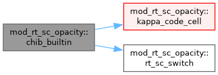

Opacity and Planck source of the short-characteristics (SC) radiative transfer. More...
Data Types | |
| interface | rt_sc_chib_iface |
| The opacity and source the solvers call. rt_sc_setup points it at one of the built-in routines, or at usr_rt_sc_chiB for 'usr'. More... | |
Functions/Subroutines | |
| subroutine, public | rt_sc_chib_rosseland (ixil, ixol, w, x, chi, bpl) |
| Table Rosseland opacity, chi = kappa_R(rho, T) rho, and source B = a T^4, both multiplied by the transition switch. | |
| subroutine, public | rt_sc_chib_kramers (ixil, ixol, w, x, chi, bpl) |
| Analytic H-minus and Kramers opacity, with the source and the switch as in rt_sc_chiB_rosseland. | |
| subroutine | chib_builtin (ixil, ixol, w, x, chi, bpl, tabulated) |
| chi and B of the built-in opacities, the table when tabulated is set and the analytic fit otherwise. Temperature and gas pressure come from the EoS, so the opacity follows whichever EoS the run uses, and the switch scales chi and B together, so that the switched-off gas is both transparent and dark | |
| pure double precision function, public | rt_sc_switch (t_k, p_code) |
| Transition switch of the built-in opacities, from the temperature in K and the gas pressure in code units. The temperature gate is one in cool gas and falls to zero across dTcap above Tcap, while the pressure gate rises from zero to one across dp_TR dex around p_TR. A cell keeps its transfer when either holds, so the larger gate wins. | |
| double precision function | kappa_code_cell (t_code, rho_code) |
| Rosseland opacity of one cell from the table, with temperature, density and opacity all in code units. | |
| double precision function | interp_logkappa (lt, lr) |
| Bilinear interpolation of log10 kappa in (log10 T, log10 R). | |
| integer function | op_locate (xx, n, xq) |
| Index jl of the table interval [xx(jl), xx(jl+1)] that holds xq, found by bisection. A point beyond either end returns the first or the last interval. | |
| subroutine, public | read_opacity_table () |
| Read the Rosseland table and shift it to code units. The file is in cgs, with T in K and R = rho/T6^3, where T6 is the temperature in 1e6 K. | |
Variables | |
| character(len=10), public | rt_sc_opacity = 'Rosseland' |
| The opacity model, either 'Rosseland' (the table), 'Kramers' (the analytic fit) or 'usr', which uses the usr_rt_sc_chiB callback. | |
| character(len=std_len), public | rt_sc_kappa_table = 'rosseland_combined.tab' |
| The Rosseland table file, read in rt_sc_setup when the table model is chosen. | |
| double precision, public | rt_sc_tcap = 2.0d4 |
| The built-in opacities keep the SC transfer on where the gas is cool (T < Tcap) or dense (p > p_TR), and switch it off smoothly in the hot, tenuous corona. The transition bands Tcap and dTcap are in K, p_TR is in dyn/cm^2 and its width dp_TR in dex. | |
| double precision, public | rt_sc_dtcap = 5.0d3 |
| double precision, public | rt_sc_p_tr = 1.0d0 |
| double precision, public | rt_sc_dp_tr = 0.5d0 |
| double precision, public | rt_sc_lp_tr = 0.0d0 |
| log10 of p_TR in code units, set by rt_sc_setup | |
| double precision, dimension(:), allocatable | op_logt |
| The Rosseland table, shifted to code units when it is read. It holds log10 kappa on a grid of log10 T and log10 R, where R = rho/T^3, all three in code units. | |
| double precision, dimension(:), allocatable | op_logr |
| double precision, dimension(:,:), allocatable | op_logk |
| integer | nt_op = 0 |
| integer | nr_op = 0 |
| procedure(rt_sc_chib_iface), pointer, public | rt_sc_chib => null() |
Detailed Description
Opacity and Planck source of the short-characteristics (SC) radiative transfer.
The solvers never evaluate the gas themselves. They call the rt_sc_chiB callback, which returns chi = kappa rho and B = a T^4 on a block, with the temperature and gas pressure taken from the EoS, so that the opacity follows whichever EoS the run uses. rt_sc_setup points the callback at one of three models, chosen by rt_sc_opacity: Rosseland the tabulated Rosseland mean, shifted to code units when it is read, so that a cell needs one logarithm each of T and rho and one power of ten; Kramers an analytic H-minus and Kramers fit with electron scattering added; usr the user routine usr_rt_sc_chiB. The built-in models also apply the transition switch rt_sc_switch. It scales chi and B together, so that the hot, tenuous corona becomes both transparent and dark to the SC transfer, and the thin cooling takes over there. The module depends only on mod_global_parameters and mod_eos
Jack Jenkins (10.2026); More or less finished in v1 state for amrvac4.0
Function/Subroutine Documentation
◆ chib_builtin()
| subroutine mod_rt_sc_opacity::chib_builtin | ( | integer, intent(in) | ixi, |
| integer, intent(in) | l, | ||
| integer, intent(in) | ixo, | ||
| l, | |||
| double precision, dimension(ixi^s,1:nw), intent(in) | w, | ||
| double precision, dimension(ixi^s,1:ndim), intent(in) | x, | ||
| double precision, dimension(ixi^s), intent(out) | chi, | ||
| double precision, dimension(ixi^s), intent(out) | bpl, | ||
| logical, intent(in) | tabulated ) |
chi and B of the built-in opacities, the table when tabulated is set and the analytic fit otherwise. Temperature and gas pressure come from the EoS, so the opacity follows whichever EoS the run uses, and the switch scales chi and B together, so that the switched-off gas is both transparent and dark
Definition at line 84 of file mod_rt_sc_opacity.t.

◆ interp_logkappa()
| double precision function mod_rt_sc_opacity::interp_logkappa | ( | double precision, intent(in) | lt, |
| double precision, intent(in) | lr ) |
Bilinear interpolation of log10 kappa in (log10 T, log10 R).
Definition at line 145 of file mod_rt_sc_opacity.t.
◆ kappa_code_cell()
| double precision function mod_rt_sc_opacity::kappa_code_cell | ( | double precision, intent(in) | t_code, |
| double precision, intent(in) | rho_code ) |
Rosseland opacity of one cell from the table, with temperature, density and opacity all in code units.
Definition at line 135 of file mod_rt_sc_opacity.t.
◆ op_locate()
| integer function mod_rt_sc_opacity::op_locate | ( | double precision, dimension(n), intent(in) | xx, |
| integer, intent(in) | n, | ||
| double precision, intent(in) | xq ) |
Index jl of the table interval [xx(jl), xx(jl+1)] that holds xq, found by bisection. A point beyond either end returns the first or the last interval.
Definition at line 164 of file mod_rt_sc_opacity.t.
◆ read_opacity_table()
| subroutine, public mod_rt_sc_opacity::read_opacity_table |
Read the Rosseland table and shift it to code units. The file is in cgs, with T in K and R = rho/T6^3, where T6 is the temperature in 1e6 K.
Definition at line 179 of file mod_rt_sc_opacity.t.
◆ rt_sc_chib_kramers()
| subroutine, public mod_rt_sc_opacity::rt_sc_chib_kramers | ( | integer, intent(in) | ixi, |
| integer, intent(in) | l, | ||
| integer, intent(in) | ixo, | ||
| l, | |||
| double precision, dimension(ixi^s,1:nw), intent(in) | w, | ||
| double precision, dimension(ixi^s,1:ndim), intent(in) | x, | ||
| double precision, dimension(ixi^s), intent(out) | chi, | ||
| double precision, dimension(ixi^s), intent(out) | bpl ) |
Analytic H-minus and Kramers opacity, with the source and the switch as in rt_sc_chiB_rosseland.
Definition at line 72 of file mod_rt_sc_opacity.t.
◆ rt_sc_chib_rosseland()
| subroutine, public mod_rt_sc_opacity::rt_sc_chib_rosseland | ( | integer, intent(in) | ixi, |
| integer, intent(in) | l, | ||
| integer, intent(in) | ixo, | ||
| l, | |||
| double precision, dimension(ixi^s,1:nw), intent(in) | w, | ||
| double precision, dimension(ixi^s,1:ndim), intent(in) | x, | ||
| double precision, dimension(ixi^s), intent(out) | chi, | ||
| double precision, dimension(ixi^s), intent(out) | bpl ) |
Table Rosseland opacity, chi = kappa_R(rho, T) rho, and source B = a T^4, both multiplied by the transition switch.
Definition at line 62 of file mod_rt_sc_opacity.t.
◆ rt_sc_switch()
| pure double precision function, public mod_rt_sc_opacity::rt_sc_switch | ( | double precision, intent(in) | t_k, |
| double precision, intent(in) | p_code ) |
Transition switch of the built-in opacities, from the temperature in K and the gas pressure in code units. The temperature gate is one in cool gas and falls to zero across dTcap above Tcap, while the pressure gate rises from zero to one across dp_TR dex around p_TR. A cell keeps its transfer when either holds, so the larger gate wins.
Definition at line 122 of file mod_rt_sc_opacity.t.
Variable Documentation
◆ nr_op
| integer mod_rt_sc_opacity::nr_op = 0 |
Definition at line 38 of file mod_rt_sc_opacity.t.
◆ nt_op
| integer mod_rt_sc_opacity::nt_op = 0 |
Definition at line 38 of file mod_rt_sc_opacity.t.
◆ op_logk
| double precision, dimension(:,:), allocatable mod_rt_sc_opacity::op_logk |
Definition at line 37 of file mod_rt_sc_opacity.t.
◆ op_logr
| double precision, dimension(:), allocatable mod_rt_sc_opacity::op_logr |
Definition at line 37 of file mod_rt_sc_opacity.t.
◆ op_logt
| double precision, dimension(:), allocatable mod_rt_sc_opacity::op_logt |
The Rosseland table, shifted to code units when it is read. It holds log10 kappa on a grid of log10 T and log10 R, where R = rho/T^3, all three in code units.
Definition at line 37 of file mod_rt_sc_opacity.t.
◆ rt_sc_chib
| procedure(rt_sc_chib_iface), pointer, public mod_rt_sc_opacity::rt_sc_chib => null() |
Definition at line 50 of file mod_rt_sc_opacity.t.
◆ rt_sc_dp_tr
| double precision, public mod_rt_sc_opacity::rt_sc_dp_tr = 0.5d0 |
Definition at line 32 of file mod_rt_sc_opacity.t.
◆ rt_sc_dtcap
| double precision, public mod_rt_sc_opacity::rt_sc_dtcap = 5.0d3 |
Definition at line 31 of file mod_rt_sc_opacity.t.
◆ rt_sc_kappa_table
| character(len=std_len), public mod_rt_sc_opacity::rt_sc_kappa_table = 'rosseland_combined.tab' |
The Rosseland table file, read in rt_sc_setup when the table model is chosen.
Definition at line 27 of file mod_rt_sc_opacity.t.
◆ rt_sc_lp_tr
| double precision, public mod_rt_sc_opacity::rt_sc_lp_tr = 0.0d0 |
log10 of p_TR in code units, set by rt_sc_setup
Definition at line 34 of file mod_rt_sc_opacity.t.
◆ rt_sc_opacity
| character(len=10), public mod_rt_sc_opacity::rt_sc_opacity = 'Rosseland' |
The opacity model, either 'Rosseland' (the table), 'Kramers' (the analytic fit) or 'usr', which uses the usr_rt_sc_chiB callback.
Definition at line 25 of file mod_rt_sc_opacity.t.
◆ rt_sc_p_tr
| double precision, public mod_rt_sc_opacity::rt_sc_p_tr = 1.0d0 |
Definition at line 32 of file mod_rt_sc_opacity.t.
◆ rt_sc_tcap
| double precision, public mod_rt_sc_opacity::rt_sc_tcap = 2.0d4 |
The built-in opacities keep the SC transfer on where the gas is cool (T < Tcap) or dense (p > p_TR), and switch it off smoothly in the hot, tenuous corona. The transition bands Tcap and dTcap are in K, p_TR is in dyn/cm^2 and its width dp_TR in dex.
Definition at line 31 of file mod_rt_sc_opacity.t.
Generated by